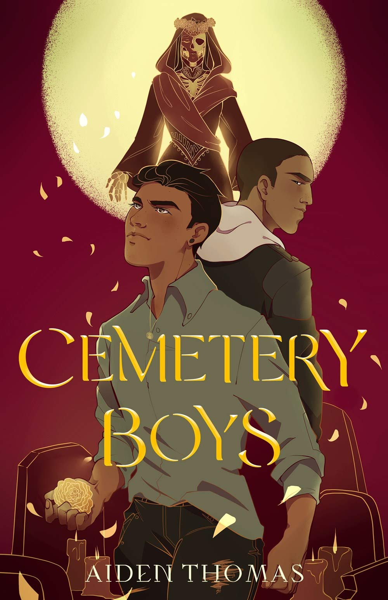
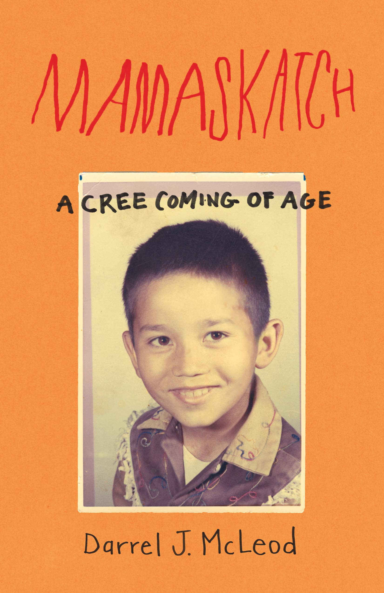

Personal Favorites





I wanted to make website where people could find books with characters that related to them. Only reading books with cishet white characters can be diminishing for POC youth. Reading books with characters that are like you can make you feel actually immersed in the book. Unfortunately, I only included a small percentage of the POC community as to keep the list short. POC youth face a lot of discrimination and often need a form of escapism. I hope that these recommendations can help others like they helped me.